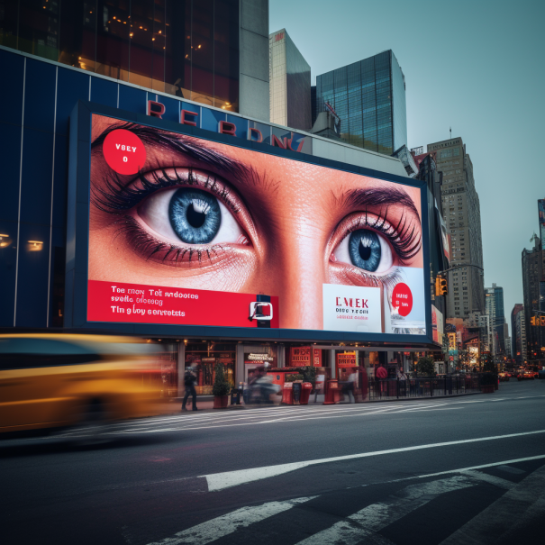
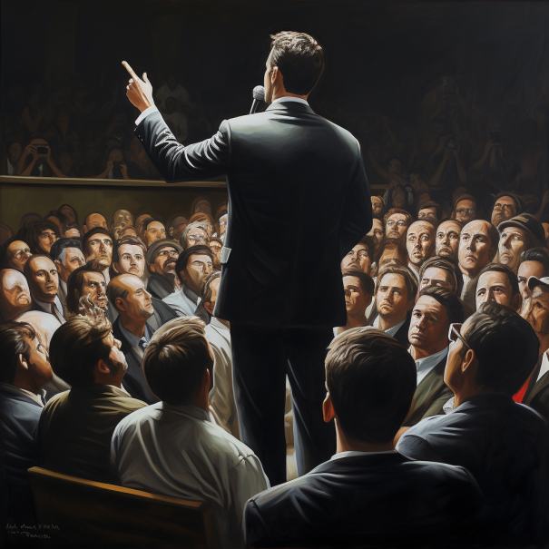
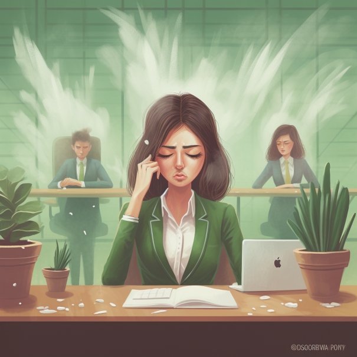
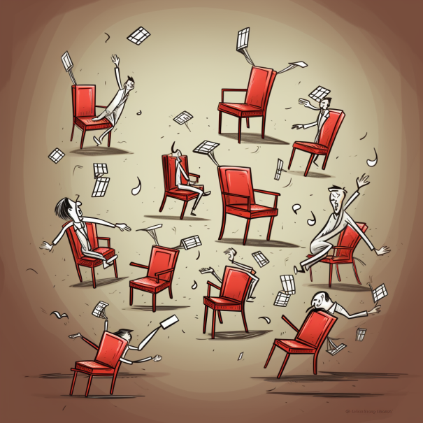
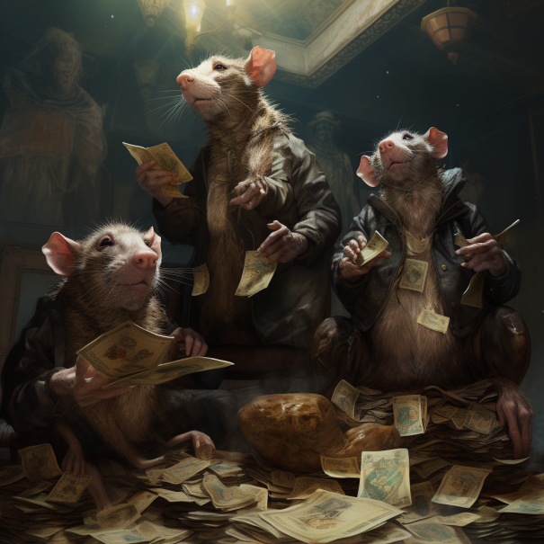
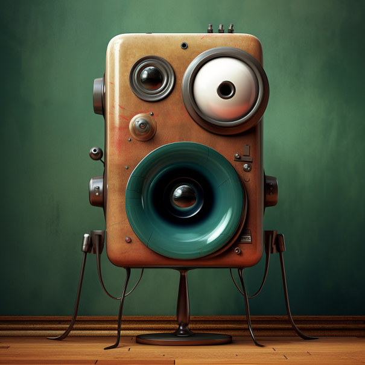
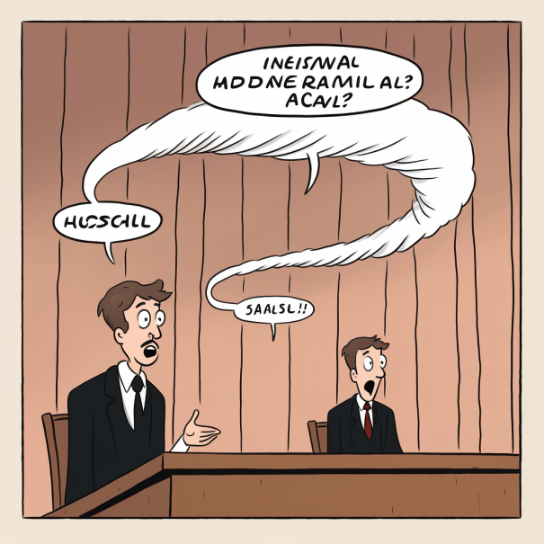
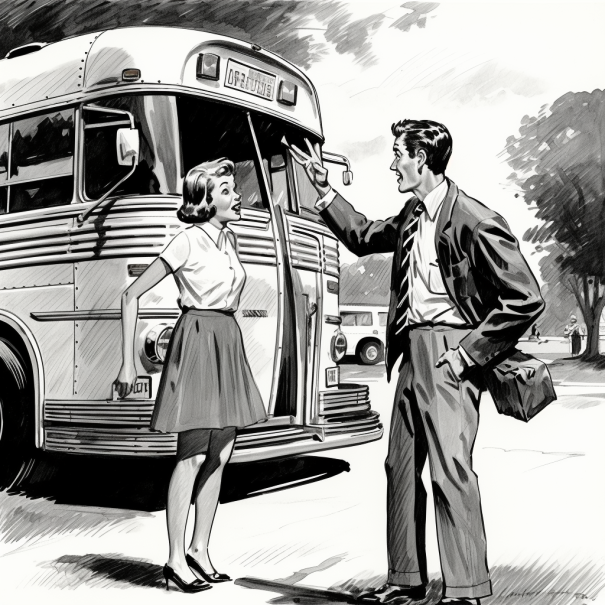

표현 목록
-
Punch Line

비즈니스에서 "펀치라인"이란 제품, 서비스, 또는 브랜드 자체의 본질을 잡아내는 기억에 남는 문구나 문장을 의미합니다. 주로 마케팅과 광고에서 사용되며, 목표 고객을 구매 또는 브랜드를 기억하는 등 원하는 행동으로 유도하는 것을 목표로 합니다. 펀치라인은 브랜드의 가치 제안, 독특한 판매 포인트, 또는 제공하는 경험을 요약해야 합니다. 종종 재치 있고, 영리하며, 감정적으로 resonant하므로 브랜드가 경쟁자들 사이에서 두각을 나타낼 수 있습니다. 예를 들면:
Nike: "Just Do It"(그냥 해)
Apple: "Think Different"(다르게 생각하라)
McDonald's: "I'm Lovin' It"(난 이걸 좋아해)
MasterCard: "There are some things money can't buy. For everything else, there's MasterCard."(돈으로 살 수 없는 것들이 있다. 그 외 모든 것에 대해서는 MasterCard가 있다.)
이러한 펀치라인들은 감정적인 반응을 불러일으키고 브랜드의 핵심 가치와 정체성을 반영하기 때문에 효과적입니다. -
Heartbreaker
"Heartbreaker"는 영어에서 사용되는 표현으로, 긍정적이지 않은 의미를 갖습니다. 이 용어는 누군가가 다른 사람의 마음을 상하게 하거나, 감정적으로 상처를 주는 사람을 묘사할 때 사용됩니다. 주로 불공평하게 행동하거나 상대방의 감정을 무시하거나 배신하는 행동을 하는 사람에게 쓰이는 표현입니다.
예를 들어, 연인 사이에서 한 쪽이 다른 쪽의 감정을 무시하고 감정적으로 상처를 주는 행동을 한다면 그 사람을 "heartbreaker"라고 할 수 있습니다. 또한, 친구나 가족 사이에서도 이 용어를 사용하여 누군가가 다른 사람의 마음을 상처로 만드는 행동을 지칭할 수 있습니다.
"Heartbreaker"는 사람을 비판하는 용어이므로, 사용할 때 주의해야 합니다. 상황에 따라서는 무책임하게 사용하면 사람들을 상처주거나 감정적으로 상할 수 있으므로, 서로를 존중하고 배려하는 언어 사용에 주의해야 합니다."
-
I got your back
'I got your back'는 '나는 너를 도와줄게' 또는 '나는 너를 지지하고 뒷받침할게'라는 의미의 표현입니다.
'back'이 '등'을 뜻하듯이, 누군가의 'back을 가지다'는 그 사람의 편에 서서 지지하고 돕는다는 의미입니다.
예를 들어, 해고 위기에 놓인 동료에게 걱정마, 내가 너를 돕고 지지하겠다고 말할 때 I got your back이라고 표현할 수 있습니다.
어려운 일을 하고 있는 친구에게 내가 여기 있으니 너를 돕을게라고 말할 때 I got your back이라고 할 수 있습니다.
'I got your back'은 동료나 친구들에 대한 신뢰와 지지의 의미를 담고 있는 표현입니다. 서로를 아끼고 엄호한다는 뜻을 전달할 때 유용하게 쓰입니다.
Square Away
"Square away"는 영어에서 사용되는 구어 표현으로, 무언가를 마무리하거나 정리하고 준비하는 것을 의미합니다. 이 표현은 일을 처리하고 완료하는 데 초점을 맞추는 데 사용되며, 주로 과제, 일정, 문제 또는 준비물을 다듬고 완성하는 과정을 지칭할 때 자주 사용됩니다.
예를 들어, 만약 누군가에게 중요한 프로젝트를 맡겼고 그 프로젝트가 완료되어야 할 기한이 다가온다면, 그 사람은 "I need to square away the project before the deadline."라고 말할 수 있습니다. 이는 프로젝트를 마무리 짓고 모든 세부사항을 처리하여 기한까지 완료하는 것을 의미합니다.
또 다른 예로, 친구들과 여행을 떠난다면, 여행 출발 전에 모든 준비물과 예약을 마무리하는 것을 의미하여 "Let's square away everything before we leave for the trip."라고 말할 수 있습니다.
이러한 구어 표현은 일상적인 대화에서 자주 들을 수 있으며, 중요한 작업이나 계획을 완성하고 완료하는 데 사용되어 효과적으로 일을 처리하는 데 도움을 줍니다."
Call Out

Call out은 도면이나 문서에서 특정 부분을 가리키기 위해 사용하는 숫자나 문자를 말합니다.
예를 들어, 기계 도면에 각 부품의 이름을 적는 대신에, 부품별로 1, 2, 3과 같은 일련번호를 매겨놓는 경우가 있습니다.
이렇게 도면에 특정 부품이나 부분을 가리키는 숫자나 글자를 'call out'이라고 합니다.
다른 예로, 카탈로그 문서에서 소개되는 제품 사진에 1, 2, 3 등의 번호를 주고 이에 대한 설명을 별도로 제공하는 경우도 call out이라고 할 수 있습니다.
이렇게 call out을 사용하면 도면이나 문서에서 언급되는 사항을 더욱 빠르고 정확하게 찾아볼 수 있습니다.
회의중에 프로젝트 매니저인 Frank 및 협력업체 프로젝트인 마티아스가 몇번 말하더라구요.
Malleable
"Malleable"은 영어에서 사용되는 형용사로, "펴기 쉬운" 또는 "성급하게 형태를 바꿀 수 있는"이라는 의미를 갖습니다. 이 표현은 주로 물리적 물질에 대해 사용되지만, 비유적으로도 사용될 수 있습니다.
물리적으로 "malleable"한 물질은 압력이나 외력에 의해 비교적 쉽게 펴지거나 형태가 바뀔 수 있는 속성을 가지고 있습니다. 가장 일반적인 예로는 금속이 있습니다. 금속은 높은 온도에서 특히 용접 작업이나 미끄럽게 하기 위해 흔히 가열된 후 펴지기 쉬운 물질로 알려져 있습니다.
비유적으로 "malleable"은 개념, 계획 또는 사람의 성격에도 적용될 수 있습니다. 예를 들어, "malleable mind"는 새로운 아이디어를 받아들이기 쉽고 융통성이 있으며 새로운 관점에 열려있는 사람을 묘사합니다. 또한 "malleable plan"은 쉽게 수정이 가능하거나 조정할 수 있는 계획을 의미합니다.
이러한 방식으로 "malleable"은 물리적, 비유적으로 모두 사용되며, 물질, 아이디어, 계획, 사람 등이 상황에 따라 쉽게 변형될 수 있는 유연성과 수정 가능성을 강조하는 용어로 자주 사용됩니다.
logjam
"Logjam"이란 단어는 주로 두 가지 상황에서 사용됩니다:
실제적인 의미: 강 또는 하천에서 나무 원목들이 얽히거나 겹쳐서 움직임을 막는 현상을 의미합니다. 이런 현상은 물의 흐름을 방해하고, 때로는 홍수를 일으키기도 합니다.
비유적인 의미: "Logjam"은 프로젝트, 과정, 논의 등이 진행되지 못하고 막혀있는 상태를 가리키는 비유적 표현입니다. 이는 다양한 이유로 발생할 수 있는데, 예를 들면 대립이나 불일치, 부족한 자원, 결정을 내리지 못하는 등의 문제로 인해 일이 진행되지 못하는 상황을 의미합니다.
예를 들어, "회의가 로그잼에 빠져서 결정을 내리지 못하고 있다"라는 문장은 논의가 막히고 결정을 내리지 못하는 상황을 설명합니다.
Buy Off
buy-off라는 단어를 간단히 설명드리겠습니다. buy-off는 우리말로 승인하다, 확인하다 정도의 뜻입니다. 예를 들어, A 씨가 B 씨에게 무언가를 제안했습니다.
B 씨가 그 제안 내용을 검토한 뒤, 마음에 든다고 판단하고 공식적으로 승인하는 것을 buy-off라고 합니다. 구체적인 상황으로는, 회사에서 신제품 디자인안이 만들어졌습니다.
이 디자인안을 품질관리팀이 검토한 뒤 문제 없다고 확인하고 서명하면, 이를 buy-off라고 합니다.
친구의 신제품 구매 제안을 듣고 나도 좋다고 동의하면, 나는 네 제안을 buy-off한다고 말할 수 있습니다.
이렇듯 buy-off는 누군가의 의견이나 제안을 입수하여 검토한 뒤, 확인이나 승인을 의미하는 말입니다.
Pick On Someone
"Pick on someone"은 누군가를 지적하거나 비난하는 것을 뜻합니다. 이 표현은 주로 더 약한 측면에 속하는 사람이나 상황을 더 강한 측면에 속하는 사람이 무리하게 비판하거나 괴롭히는 상황을 묘사할 때 사용됩니다.
이 표현은 종종 어린이들 사이에서 사용되며, 더 강하고 능력 있는 아이들이 더 약하고 민감한 아이들을 괴롭히거나 비난하는 상황을 설명할 때 자주 들을 수 있습니다. 그러나 이러한 상황은 어린이들 뿐만 아니라 어른들 간의 상호작용에서도 발생할 수 있습니다.
"Pick on someone"은 강한 측면의 개인이 약한 측면의 개인을 공격하거나 괴롭히는 의도가 있는 상황을 의미합니다. 이는 사회적으로 바람직하지 않으며, 상대방을 존중하고 배려하는 존중의 원칙에 반하는 행동입니다.
예를 들어, 학교에서 한 학생이 다른 학생을 자주 비난하거나 괴롭힌다면, 그 학생은 "picking on someone"으로 여겨질 수 있습니다. 이러한 행동은 학교 내 폭력 또는 괴롭힘으로 간주되며, 교육 기관에서는 이러한 행동을 방지하고 예방하기 위해 노력합니다.
따라서 "pick on someone"은 다른 사람들을 존중하고 배려하는 데 반하는 부정적인 행동이며, 서로를 존중하고 이해하는 긍정적인 상호작용이 필요한 것을 강조하는 표현입니다.
Cadence
고객인 무스타파가 협력업체 프로젝트 매니저인 마티아스에게 아래와 같이 물어보더라구요. Are you okay with the meeting cadence?
그 뜻을 찾아보니, 'Cadence'는 일정한 리듬이나 속도를 의미였네요. 회의의 경우, 얼마나 자주 회의가 열리고, 회의 순서나 일정이 어떻게 되어 있는지를 '회의의 카덴스'라고 할 수 있습니다.
그래서 Are you okay with the meeting cadence?는 다음을 묻는 것입니다:
현재의 회의 빈도에 만족하는지 (예: 매주 1회 회의 진행) 회의 일정이나 순서가 나에게 맞는지 (예: 월요일 오전에 정기 회의) 회의 주기나 패턴이 적절한지 (예: 분기마다 전체 회의 진행)
즉, 회의의 리듬이나 패턴이 나에게 수용 가능한지, 편안한지 묻는 것입니다.
Flesh Out
"Flesh out"은 영어에서 "상세히 설명하다" 또는 "자세히 계획하다"라는 의미의 구어 표현입니다. 이 표현은 무언가를 더 자세하게 다루거나 구체적으로 설명하거나 계획을 세부적으로 완성시키는 데 사용됩니다.
"Flesh out"은 종종 "flash out"이라고 오해되기도 하지만, 올바른 표현은 "flesh out"입니다.
예를 들어, 프로젝트를 시작할 때 아이디어가 있지만 아직 구체적인 계획이 없을 수 있습니다. 이때, 팀원들과 함께 회의를 통해 아이디어를 더 "flesh out"하여 구체적인 목표와 계획을 세우는 것이 중요합니다. 이는 프로젝트를 성공적으로 진행하기 위해 필요한 단계입니다.
또 다른 예로, 작가가 새로운 소설을 쓰기 시작할 때, 아직 주인공과 스토리의 세부 내용이 불완전할 수 있습니다. 따라서 작가는 캐릭터들을 더 "flesh out"하여 그들의 개성, 목표, 감정 등을 상세하게 묘사하고, 스토리를 더 풍부하게 만들어 나가게 됩니다.
"Flesh out"은 무엇이든 더 자세히 다루고 완성시키는 과정을 강조하는 표현이며, 좀 더 풍성하고 구체적인 정보를 제공하거나 계획을 완성하는 데 사용됩니다.
I am not gonna to sweat it.

"I am not gonna to sweat it"은 영어에서 사용되는 구어 표현으로, 일상 대화에서 자주 들을 수 있는 표현입니다.
이 표현은 '걱정하지 않을 것이다', '너무 신경 쓰지 않을 것이다', '너무 걱정하지 않을 것이다' 등과 유사한 의미를 가지고 있습니다.
'땀을 흘리다(sweat)'는 말 그대로 체력적인 노력이나 긴장으로 땀을 흘리는 것을 의미하는데, 여기에서는 정서적인 부담, 걱정, 불안 등으로 인해 마음이 불안정해지는 것을 '땀 흘린다'고 비유적으로 표현한 것입니다.
따라서 "I am not gonna to sweat it"은 주로 자신이나 상황에 대해 지나치게 걱정하거나 부담스러워하지 않을 것을 나타내는 표현으로, 상황을 더 편안하게 받아들이겠다는 의지를 나타냅니다.
이 표현은 일상 대화에서 자신의 마음을 안정시키거나 긍정적인 마인드셋을 유지하는 데 사용되며, 간단한 상황부터 중요한 결정을 내리는 데에도 사용될 수 있습니다.
예를 들어, 친구가 시험을 앞둔 상태에서 "I am not gonna to sweat it. I'll do my best and see what happens."라고 말한다면, 그 친구는 너무 걱정하지 않을 것이며 최선을 다하겠다는 자신감을 표현하고 있습니다.
이렇게 긍정적인 마인드셋을 가지는 것은 자신을 안정시키고 더 좋은 결과를 이끌어낼 수 있는데 도움이 될 수 있습니다.
Cobble Together
'cobble together'는 '여러 가지를 모아서 서투르게 만들다'라는 의미의 표현입니다.
'cobble'은 보통 작고 불규칙한 돌들을 이용해 길이나 건물을 만드는 것을 의미합니다.
이를 바탕으로 'cobble together'는 여러 잡다한 재료나 정보를 이용해서 뭔가를 서투르지만 완성하는 것을 뜻합니다.
예를 들어, 시험 준비를 위해 여러 출처의 정보를 cobble together했다. 예산 부족으로 인해 고급 부품 대신에 저렴한 부품을 cobble together했다.
충분한 자료가 없어서 가능한 정보를 cobble together해 보고서를 작성했다.
이처럼 'cobble together'는 여러 요소를 모아서 서툰 결과물을 만드는 것을 의미합니다.
Balm
"밤(balm)"은 일반적으로 피부에 바르는 제품으로, 주로 피부를 진정시키거나 보호하는데 사용됩니다. 밤은 크림이나 로션과는 다르게 일반적으로 더 진한 질감을 가지고 있으며, 보통 왁스, 오일, 허브 추출물 등으로 만들어집니다.
힐링 밤(Healing Balm): 힐링 밤은 피부를 진정시키고 치유하는 데 도움이 되는 성분들이 포함되어 있습니다. 일반적으로 상처, 화상, 발진 등의 피부 문제를 치료하거나 완화하는 데 사용됩니다.
립 밤(Lip Balm): 립 밤은 입술의 건조함과 갈라짐을 예방하고 치유하는 데 사용됩니다. 립 밤에는 보습 성분과 함께 향이나 색상을 추가하는 경우도 있습니다.
머슬 밤(Muscle Balm): 머슬 밤은 근육 통증과 긴장을 완화하는 데 도움이 되는 성분들이 포함되어 있습니다. 일반적으로 스포츠 활동 후에 근육의 통증과 염증을 완화하는 데 사용됩니다.
에센셜 오일 밤(Essential Oil Balm): 에센셜 오일 밤은 아로마테라피 목적으로 사용되며, 특정 에센셜 오일의 향이 휴식과 안정, 집중력 향상 등 다양한 효과를 가져올 수 있습니다.
수분 보습 밤(Moisturizing Balm): 수분 보습 밤은 피부를 보호하고 보습하는 데 도움이 되는 성분들이 포함되어 있습니다. 이들은 특히 건조한 피부에 이상적입니다.
타이거 밤과 같은 밤들은 위에서 언급한 카테고리 중 하나 이상에 속할 수 있습니다. 예를 들어, 타이거 밤은 머슬 밤으로 분류될 수 있으며, 통증 완화 및 염증 완화 효과가 있습니다. 이러한 밤 제품을 사용할 때는 항상 제품 라벨을 확인하고 지시에 따라 사용하는 것이 중요합니다."
Reconcile
"Reconcile"은 다양한 맥락에서 사용되는 동사로, 주로 두 가지 다른 것 또는 개념을 조정하거나 조화시키는 행위를 의미합니다. 이 용어는 주로 갈등, 차이점 또는 모순을 해소하고 조화를 이루는 과정을 묘사하는 데 사용됩니다.
예를 들어, 다음과 같은 상황에서 "reconcile"을 사용할 수 있습니다:
- 의견이 다른 두 사람이 서로의 의견을 이해하고 합의점을 찾는 경우:
"We had different opinions on the project, but we managed to reconcile our ideas and come up with a collaborative solution."
- 은행 거래내역이 잘못 기재되었을 때 이를 조정하는 경우:
"I need to reconcile my bank statement with my transaction records to ensure there are no errors."
- 가치나 원칙에 대한 내부적인 갈등을 해소하는 경우:
"He struggled to reconcile his desire for success with his belief in work-life balance."
- 회계 분석에서 잔액 차이를 해소하는 경우:
"The accountant worked diligently to reconcile the discrepancies in the financial records."
- 개인적인 갈등이나 분노를 조정하여 평화를 찾는 경우:
"After their argument, they took some time to cool off and then reconciled their differences."
Musical Chairs

musical chairs는 음악에 맞춰 의자들을 돌아다니면서 의자를 차지하려 하는 놀이입니다.
먼저 의자들이 의자에 앉을 사람들보다 하나 적은 수만큼 배치됩니다.
그리고 음악이 흐르는 동안 참가자들은 의자들을 돌면서 원을 그리며 춤을 춥니다.
음악이 중지되면 참가자들은 가장 가까운 의자에 앉아야 합니다. 의자를 차지하지 못한 사람은 탈락합니다.
이렇게 의자 하나가 빠진 채 음악이 계속 흘러 다음 라운드가 진행됩니다. 마지막 남은 한 사람이 최종 승리자가 되는 신나는 놀이입니다.
비즈니스에서 'musical chairs'는 보통 조직 내부의 잦은 인사 움직임을 비유적으로 이르는 말로 사용됩니다.
예를 들어, 최근 우리 회사는 musical chairs가 벌어지고 있어서 부서간 인사 이동이 너무 잦다.
이번 사업부 리오그에니제이션으로 인해 많은 직원이 musical chairs를 하고 있다.
수시로 바뀌는 매니저로 인해 부하직원들이 musical chairs를 피하기 위해 노력 중이다.
이렇게 회사 내부에서 직원들의 자리가 수시로 바뀌는 상황을 musical chairs라 표현하기도 합니다.
자리 경쟁과 변동이 높은 상황을 비유적으로 이르는 말이죠.
Caveat
caveat는 '주의사항'이나 '유보사항'을 뜻하는 말입니다.
보통 계약서나 법률 문서에서 주로 사용되는데, 특정 조건이나 상황에서 주의를 기울여야 할 사항을 명시하는 의미로 쓰입니다.
예를 들어, 이 계약은 당사자 간 협의에 따라 변경될 수 있다는 조항을 넣는 경우, This contract is subject to change upon mutual agreement between parties라는 caveat를 추가하는 것입니다.
다시 말해, caveat는 '이 내용에는 예외 상황이 있음을 유의하라'는 주의사항을 제시하는 말이라고 이해하시면 됩니다.
법률 문서 작성 시 중요한 사항을 누락하지 않도록 caveat를 명확히 기재하는 것이 좋습니다.
한 마디로 '주의하라'는 뜻의 말이라고 기억하시면 도움이 될 것 같습니다.
My question is kind of rhetorical question.

"Rhetorical question"은 답변이나 정보를 얻기 위해 묻는 것이 아니라, 주장을 강조하거나 문장의 효과를 내기 위해 사용되는 종류의 질문입니다.
이러한 유형의 질문을 하면서 질문을 하는 사람은 이미 답을 알고 있으며, 청중을 동참시키거나 사고를 자극하는데 사용되는 수사적 또는 설득적인 수단으로 활용합니다.
이러한 상황에서 'My question is kind of a rhetorical question.'이라는 표현은 상사가 부하사원에게 사용되며, 실제로 답을 원하는 것이 아니라 단순히 주장을 강조하거나 상사의 의견을 강제로 받아들이도록 유도하는 데 사용될 수 있습니다.
Rathole

문맥에 따른 일반적인 의미: 먼저, "rathole"은 직역하면 '쥐구멍'을 의미하며, 이는 작고 협소한 공간이나 구멍을 가리키는 데 사용될 수 있습니다.
건설 및 석유 산업에서의 의미: 건설 현장이나 석유 광산에서 "rathole"은 드릴링 장비를 저장하는 데 사용되는 깊고 좁은 구멍을 가리킵니다.
비즈니스와 투자에서의 의미: 비즈니스 또는 투자의 맥락에서 "rathole"은 돈이나 자원이 낭비되는 상황을 가리키는 비유적인 표현입니다.
예를 들어, "throwing money down a rathole"이라는 표현은 큰 이익 없이 돈을 낭비하는 상황을 설명합니다.
회의 또는 토론에서의 의미: 또한, "rathole"은 회의나 토론에서 주제에서 크게 벗어나, 종종 비생산적인 방향으로 토론이 진행되는 상황을 의미하기도 합니다.
이를 "going down a rathole"이라고 표현하며, 이는 주요 주제에서 벗어나 불필요한 세부 사항에 대해 지나치게 많은 시간을 소비하는 것을 말합니다. 주로 이 의미로 많이 사용됩니다.
A Little Goofy to Me

"A little goofy to me"는 비격식적인 영어 표현으로, 누군가나 무언가가 약간 우스꽝스럽거나 웃긴 느낌을 주는 것을 나타냅니다. 이 표현은 주로 긍정적인 뉘앙스로 사용되며, 상대방을 해치거나 비난하는 의도가 없이 그저 웃기거나 기묘한 면을 갖고 있다고 느끼는 상황에서 자주 사용됩니다.
예를 들어, 어떤 사람이 엉뚱한 장난을 치거나 귀여운 실수를 저지르면 주변 사람들은 "Oh, you're a little goofy!"라고 말하여 그 사람이 웃기고 귀엽게 느껴진다고 표현할 수 있습니다. 이때 "goofy"는 웃기고 괴짜 같은 뜻을 갖고 있으며, "a little"은 약간이라는 의미를 더합니다.
이 표현은 다른 사람들과 가벼운 분위기에서 사용하며, 친밀한 사이에서 서로를 잘 이해하고 웃을 수 있는 상황에서 자주 듣게 됩니다. 일반적으로 친밀한 관계에서 사용되는 표현이므로, 혼자서 낯선 사람에게 사용하기보다는 친한 친구나 가족과 함께 있을 때 자연스럽게 사용하는 것이 좋습니다. "
Potato Quality
"Potato quality"는 영어에서 사용되는 비격식적인 표현으로, 사진, 비디오 또는 기타 미디어 콘텐츠의 품질이 매우 낮거나 부족한 상태를 묘사하는 용어입니다. 이 표현은 주로 이미지나 동영상이 해상도가 낮고 선명하지 않아 마치 감자(포테이토)를 보는 것과 같이 흐릿하고 모호한 상태를 비유적으로 표현하는데 사용됩니다.
이미지 품질: 친구가 여행에서 찍은 사진을 보여줄 때, 사진이 매우 흐릿하고 해상도가 낮아서 세부사항이 거의 보이지 않습니다. 이때 다른 친구가 농담 삼아 "Wow, your photo is potato quality!"라고 말할 수 있습니다.
동영상 품질: 온라인 동영상 스트리밍 서비스에서 매우 오래된 영화를 시청하다 보면, 화면이 픽셀로 가득차고 해상도가 낮을 수 있습니다. 이때 사용자는 "This movie is interesting, but the video quality is like a potato!"라고 말하여 동영상의 해상도가 낮음을 지적할 수 있습니다.
웹캠 품질: 비디오 회의 중에 상대방의 웹캠이 매우 낮은 해상도로 인해 상대방의 얼굴이 모호하게 보이는 상황이 발생할 수 있습니다. 참석자 중 한 명이 농담으로 "I can barely see you with this potato quality webcam!"라고 말하여 웹캠 품질의 떨어지는 상황을 재치있게 비판할 수 있습니다."
Gibber

'gibber'는 '무의미한 말을 더듬거리다'는 뜻이 있고, 이를 바탕으로 한 gibberish는 혼란스러운 말이나 문장을 뜻하는 말입니다.
예를 들어, 그는 술에 취해 정신이 없는 gibberish를 계속 늘어놓고 있었다.
이 보고서는 내용이 gibberish로 읽기 어려웠다. 그 프로젝트는 지휘자가 없어 완전한 gibberish 상태가 되었다.
이처럼 의미 없고 어수선한 말이나 내용을 의미할 때 'gibberish'를 사용합니다.
Personal Privilege
물가 인상과 관련된 정책을 논의하는 회의가 진행 중이라고 가정해봅시다. 참가자들은 이에 대해 다양한 의견을 제시하고 논의를 진행하고 있습니다. 이때, 한 참가자가 "personal privilege"을 요청합니다.
그 참가자가 "personal privilege"을 요청하는 이유는, 자신이 물가 인상으로 인해 경제적으로 어려움을 겪고 있기 때문입니다.
그는 회의가 진행되는 동안 개인적인 사안을 처리해야 한다고 설명합니다.
이로 인해 그는 일시적으로 회의를 떠나거나, 다른 참가자들에게 개인적인 사안을 공유하는 시간을 필요로 합니다.
이에 회의의 주최자나 주도자는 그 참가자의 "personal privilege"을 수용하고 이해합니다.
회의가 일시 중단되거나 그 참가자에게 개인적인 사안에 대해 민감하게 대응합니다.
그러나 회의의 목적과 일정을 최대한 유지하면서 그 참가자가 필요한 시간을 제공합니다.
이로써 회의는 적절하게 조정되고, 그 참가자는 개인적인 사안을 처리하고 다시 회의에 돌아와 논의에 참여할 수 있습니다.
Throw Under The Bus

"Throw under the bus"는 영어 표현으로, 누군가를 어려운 상황에서 혼자 책임을 지도록 내몰거나 희생시키는 것을 의미합니다. 이 표현은 흔히 누군가의 잘못이나 실패를 다른 사람에게 돌리는 행위를 가리키며, 그 사람을 불리한 상황에 놓게 하거나 불이익을 주는 것을 포함합니다.
예를 들어, 상사가 팀원 중 한 명의 실수로 인해 문제가 발생했을 때, 그 상사가 그 팀원을 "throw under the bus"하면, 그 팀원에게 전적으로 책임을 돌리고 자신은 어떠한 책임도 지지 않으려고 할 수 있습니다. 이는 누군가를 희생하여 자신의 입장을 지키기 위한 비도덕적인 행동이라고 볼 수 있습니다.
이 표현은 주로 비형식적인 상황에서 사용되며, 사회적으로 좋지 않은 행동이라고 여겨집니다. 협력과 공정한 태도를 중요시하는 상황에서는 오히려 문제를 해결하고 동료들과 협력하여 더 나은 결과를 이끌어내는 것이 바람직합니다.
Head Start
'a head start'는 '선취약점을 가지다'라는 의미의 표현입니다. 보통 경쟁 상황에서 한쪽이 상대방에 비해 앞서 있는 위치나 이점을 뜻합니다.
예를 들어, 시험 공부를 일찍 시작한 학생은 다른 학생들에 비해 시험 준비에 head start가 있다. 새 제품을 먼저 출시한 회사가 경쟁사에 비해 시장 선점에 head start가 있다.
운동을 몇 년 전부터 했기 때문에, 그는 마라톤 대회에서 다른 선수들에게 head start가 있다.
이렇듯 'a head start'는 경쟁 우위를 점하기 위한 선제적 행동이나 상황을 이야기할 때 자주 쓰입니다.
한 마디로 '앞서 나가는' 이점이라는 뜻으로 이해하시면 될 것 같습니다.
인터넷에서 사용되는 용어로, 다른 사람들을 고의적으로 성가시게 하거나 분노를 유발하는 행동을 가리킵니다. 이러한 행동은 종종 비방적인 댓글, 교묘한 도발, 또는 누군가를 기만하는 데 목적이 있습니다.
비즈니스 측면에서 보면, 트롤링은 종종 소셜 미디어, 커뮤니티 포럼, 댓글 섹션 등에서 발생하며, 이러한 행동은 브랜드의 온라인 이미지나 고객 경험에 부정적인 영향을 미칠 수 있습니다. 그래서 많은 기업들이 이러한 행동을 관리하고자 커뮤니티 가이드라인을 설정하고, 필요한 경우 이를 강제하는 커뮤니티 매니저를 고용합니다.